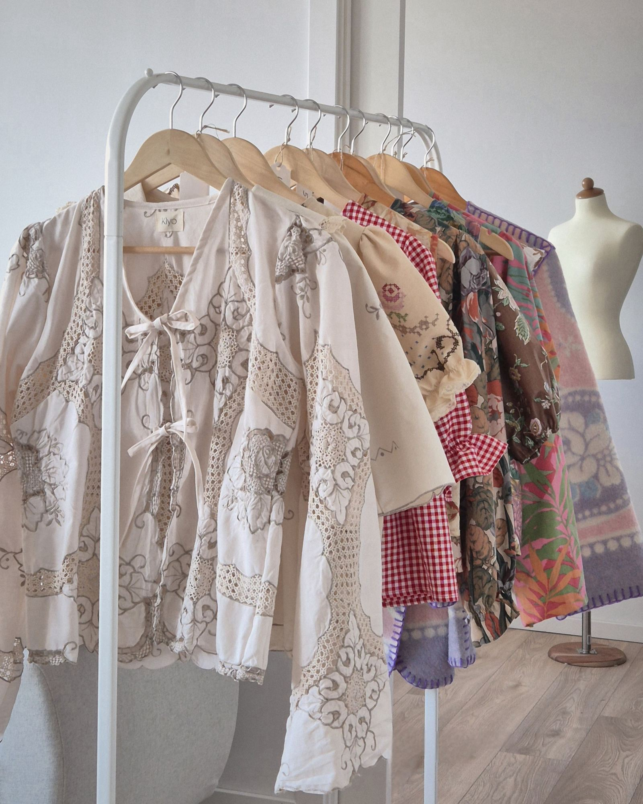
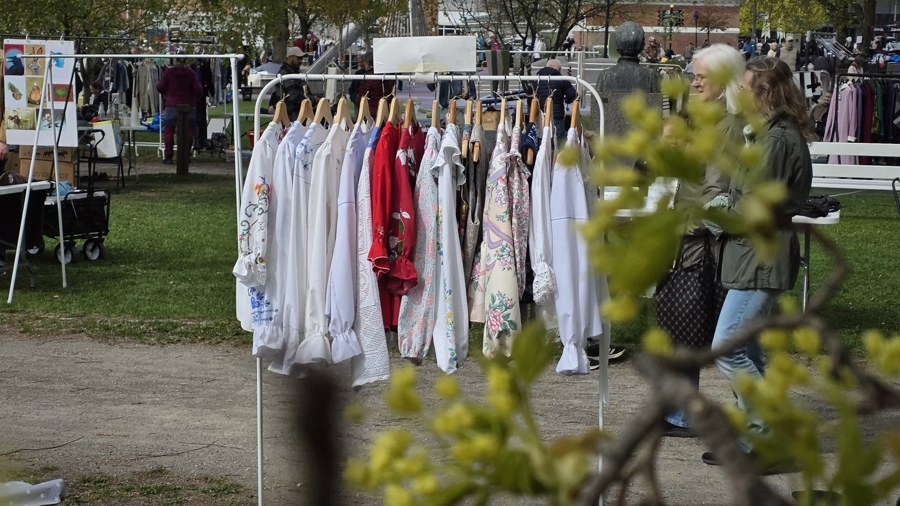

Intervju · Klyo
Fra spisebordet til garderoben
Duker, gardiner og overskuddsmaterialer får en ny rolle hos Klyo. Kulani Premadasa forteller om hvorfor hun valgte redesign – og om å begynne på nytt i Norge.
Fra Sri Lanka til Norge
Kulani har studert Fashion Design and Product Development og har en bachelorgrad med utmerkelse i motedesign fra University of Moratuwa i Sri Lanka.
Den første virksomheten startet hun i Sri Lanka i 2019. Da hun flyttet til Norge i 2022, begynte hun på nytt og ga merket navnet Klyo.
Klyo lager plagg av tekstiler som allerede finnes. Plaggene selges via Instagram, på Tise og på markeder i Oslo og Hamar.

Video: Klyo / Kulani Premadasa
Visjonen
«Jeg ønsker å vise at vi kan skape vakre og unike plagg av materialer som allerede finnes.»
Kulani Premadasa, Klyo
Fem spørsmål til Kulani
Svarene er Kulanis egne, skriftlige svar til AVANT.
- AVANTKan du fortelle litt om deg selv og bakgrunnen din?
- Kulani«Jeg har studert Fashion Design and Product Development og har alltid hatt stor interesse for mote og kreativitet. Jeg startet min egen virksomhet i Sri Lanka i 2019. Etter at jeg flyttet til Norge i 2022, startet jeg på nytt og rebrandet virksomheten til Klyo. Det har vært en spennende, men krevende reise, med mange utfordringer og nye muligheter.»
- AVANTHvorfor ville du starte Klyo?
- Kulani«Jeg ønsket å kombinere lidenskapen min for design med et ønske om å bidra positivt til miljøet. Gjennom Klyo redesigner jeg tekstiler som duker, gardiner og overskuddsmaterialer til unike plagg. Målet er å redusere tekstilavfall og gi eksisterende materialer nytt liv.»
- AVANTHva er visjonen for Klyo?
- Kulani«Visjonen min er å bidra til en mer bærekraftig moteindustri med minst mulig tekstilsvinn. Jeg ønsker å vise at vi kan skape vakre og unike plagg av materialer som allerede finnes.»
- AVANTHvilke planer har du fremover?
- Kulani«Jeg ønsker å utvikle Klyo videre, skape flere unike design og nå ut til flere kunder. Målet er å vokse som merkevare og inspirere flere til å velge redesign og mer bærekraftig mote.»
- AVANTHar du et råd til andre som vil gjøre det samme?
- Kulani«Tro på ideen din, vær tålmodig og ikke gi opp når det blir utfordrende. Alt trenger ikke å være perfekt fra starten. Start med det du har, lær underveis og jobb videre mot drømmen din. Lidenskap og hardt arbeid kan ta deg langt.»


- Merke
- Klyo
- Designer
- Kulani Premadasa
- Tekst
- AVANT · intervjusvar av Kulani Premadasa
- Foto og video
- Klyo / Kulani Premadasa
- Utgave
- Featured Edit 01 · Høst 2026